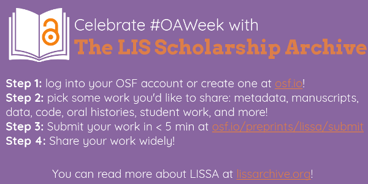

The LIS Scholarship Archive has launched!
I am really pleased to finally announce that the LIS Scholarship Archive is officially, 100% launched! LISSA is an open source, open access disciplinary repository for library and information science which I co-founded this year. A really great opportunity for LIS to holistically publish their work openly!
The LIS Scholarship Archive first opened for submission in August 2017, for a "soft launch" period to see where functionality and usability can be improved for a full launch. We picked this week in October to coincide with Open Access Week, an international, annual scholarly communication event focusing on open access, sponsored by SPARC. LISSA accepts the full range of content from the library and information science (LIS) community and allied fields, including but not limited to: data, code, oral histories, zines, articles, books/book chapters, and student work. LISSA is governed by a board of LIS professionals from a range of backgrounds and managed technologically by the Center for Open Science.
You can read the full LISSA launch announcement below, also posted on lissarchive.org here.
The LIS Scholarship Archive (osf.io/preprints/lissa) has fully launched and we are ready to help you open your work! The LIS Scholarship Archive, in partnership with the Center for Open Science, is a free, open, and community-led archive for scholarship in library and information science and allied fields. The infrastructure of LISSA is completely open source and all materials and associated metadata on LISSA will be permanently, publicly available.
On LISSA, LIS workers, students, trainees, and others in the field can make their incredible work open and discoverable, from metadata records to oral histories to manuscripts to data. Currently on LISSA, there are preprints, postprints, grant narratives, posters, book manuscripts, data, and code, in a variety of languages, from a diverse authorship! Let’s keep this going! If you are someone who works in LIS and who supports open scholarship, this is what you can do:
- Submit your work in less than 5min.
- Spread the word about LISSA, and encourage others to submit their work!
You can always get updates from LISSA on lissarchive.org or Twitter @LISSArchive (@LISSA_SCHOL for a feed of new uploads!) or via email (lissarchive@gmail.com). Feel free to reach out to us!